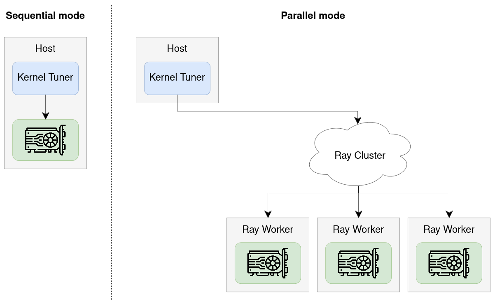

Parallel and Remote Tuning¶
By default, Kernel Tuner benchmarks GPU kernel configurations sequentially on a single local GPU. While this works well for small tuning problems, it can become a bottleneck for larger search spaces.
{kind=link}

Kernel Tuner also supports parallel tuning, allowing multiple GPUs to evaluate kernel configurations in parallel. The same mechanism can be used for remote tuning, where Kernel Tuner runs on a host system while one or more GPUs are located on remote machines.
Parallel/remote tuning is implemented using Ray and works on both local multi-GPU systems and distributed clusters.
How to use¶
To enable parallel tuning, pass the parallel argument to tune_kernel:
kernel_tuner.tune_kernel(
"vector_add",
kernel_string,
size,
args,
tune_params,
parallel=True,
)
If parallel is set to True, Kernel Tuner will use all available Ray workers for tuning.
The parallel option can also be set to an integer n to use exactly n workers.
Alternatively, define the environment variable KERNEL_TUNER_PARALLEL to enable parallel execution without modifying your Python code.
$ KERNEL_TUNER_PARALLEL=true python3 my_tuning_script.py
Parallel tuning and optimization strategies¶
The achievable speedup from using multiple GPUs depends in part on the optimization strategy used during tuning.
Some optimization strategies support maximum parallelism and can evaluate all configurations independently. Other strategies support limited parallelism, typically by repeatly evaluating a fixed-size population of configurations in parallel. Finally, some strategies are inherently sequential and always evaluate configurations one by one, providing no parallelism.
The current optimization strategies can be grouped as follows:
Maximum parallelism:
brute_force,random_sampleLimited parallelism:
genetic_algorithm,pso,diff_evo,firefly_algorithmNo parallelism:
minimize,basinhopping,greedy_mls,ordered_greedy_mls,greedy_ils,dual_annealing,mls,simulated_annealing,bayes_opt
Setting up Ray¶
Kernel Tuner uses Ray to distribute kernel evaluations across multiple GPUs. Ray is an open-source framework for distributed computing in Python.
To use parallel tuning, you must first install Ray itself:
$ pip install ray
Next, you must set up a Ray cluster. Kernel Tuner will internally attempt to connect to an existing cluster by calling:
ray.init(address="auto")
Refer to the Ray documentation for details on how ray.init() connects to a local or remote cluster
(documentation).
For example, you can set the RAY_ADDRESS environment variable to point to the address of a remote Ray head node.
Alternatively, you may manually call ray.init(address="your_head_node_ip:6379") before calling tune_kernel.
Here are some common ways to set up your cluster:
Local multi-GPU machine¶
By default, on a machine with multiple GPUs, Ray will start a temporary local cluster and automatically detect all available GPUs. Kernel Tuner can then use these GPUs in parallel for tuning.
Distributed cluster with SLURM (easy, Ray ≥2.49)¶
The most straightforward way to use Ray on a SLURM cluster is to use the ray symmetric-run command, available from Ray 2.49 onwards.
This launches a Ray environment, runs your script, and then shuts it down again.
Consider the following script launch_ray.sh.
#!/usr/bin/env bash
set -euo pipefail
# Get SLURM variables
NODELIST="${SLURM_STEP_NODELIST:-${SLURM_JOB_NODELIST:-}}"
NUM_NODES="${SLURM_STEP_NUM_NODES:-${SLURM_JOB_NUM_NODES:-}}"
if [[ -z "$NODELIST" || -z "$NUM_NODES" ]]; then
echo "ERROR: Not running under Slurm (missing SLURM_* vars)."
exit 1
fi
# Get head node
NODES=$(scontrol show hostnames "$NODELIST")
NODES_ARRAY=($NODES)
RAY_IP="${NODES_ARRAY[0]}"
RAY_PORT="${RAY_PORT:-6379}"
RAY_ADDRESS="${RAY_IP}:${RAY_PORT}"
# Ensure command exists (Ray >= 2.49 per docs)
if ! ray symmetric-run --help >/dev/null 2>&1; then
echo "ERROR: 'ray symmetric-run' not available. Check Ray installation (needs Ray 2.49+)."
exit 1
fi
# Launch cluster!
echo "Ray head node: $RAY_ADDRESS"
exec ray symmetric-run \
--address "$RAY_ADDRESS" \
--min-nodes "$NUM_NODES" \
-- \
"$@"
Next, run your Kernel Tuner script using srun.
The exact command depends on your cluster.
In the example below, -N4 indicates 4 nodes and --gres=gpu:1 indicates 1 GPU per node.
$ srun -N4 --gres=gpu:1 launch_ray.sh python3 my_tuning_script.py
Distributed Cluster with SLURM (manual, Ray <2.49)¶
An alternative way to use Ray on SLURM is to launch a Ray cluster, obtain the IP address of the head node, and the connect to it remotely.
Consider the following sbatch script submit_ray.sh.
#!/bin/bash
#SBATCH --time=00:10:00
#SBATCH --nodes=2
#SBATCH --ntasks-per-node=1
#SBATCH --gpus-per-task=1
set -euo pipefail
HEAD_NODE=$(scontrol show hostnames "$SLURM_JOB_NODELIST" | head -n1)
HEAD_NODE_IP=$(srun -N1 -n1 -w "$HEAD_NODE" bash -lc 'hostname -I | awk "{print \$1}"')
RAY_PORT=6379
RAY_ADDRESS="${HEAD_NODE_IP}:${RAY_PORT}"
echo "Launching head node: RAY_ADDRESS=$RAY_ADDRESS"
srun --nodes=1 --ntasks=1 -w "$HEAD_NODE" \
ray start --head --node-ip-address="$HEAD_NODE_IP" --port="$RAY_PORT" --block &
sleep 5
NUM_WORKERS=$((SLURM_JOB_NUM_NODES - 1))
echo "Launching ${NUM_WORKERS} worker node(s)"
if [[ "$NUM_WORKERS" -gt 0 ]]; then
srun -n "$NUM_WORKERS" --nodes="$NUM_WORKERS" --ntasks-per-node=1 --exclude "$HEAD_NODE" \
ray start --address "$RAY_ADDRESS" --block &
fi
# Keep job alive (or replace with running your workload on the head)
wait
Next, submit your job using sbatch.
$ sbatch submit_ray.sh
Submitted batch job 1223577
After this, inspect the file slurm-1223577.out and search for the following line:
$ grep RAY_ADDRESS slurm-1223577.out
Launching head node: RAY_ADDRESS=145.184.221.164:6379
Finally, launch your application using:
RAY_ADDRESS=145.184.221.164:6379 python my_tuning_script.py